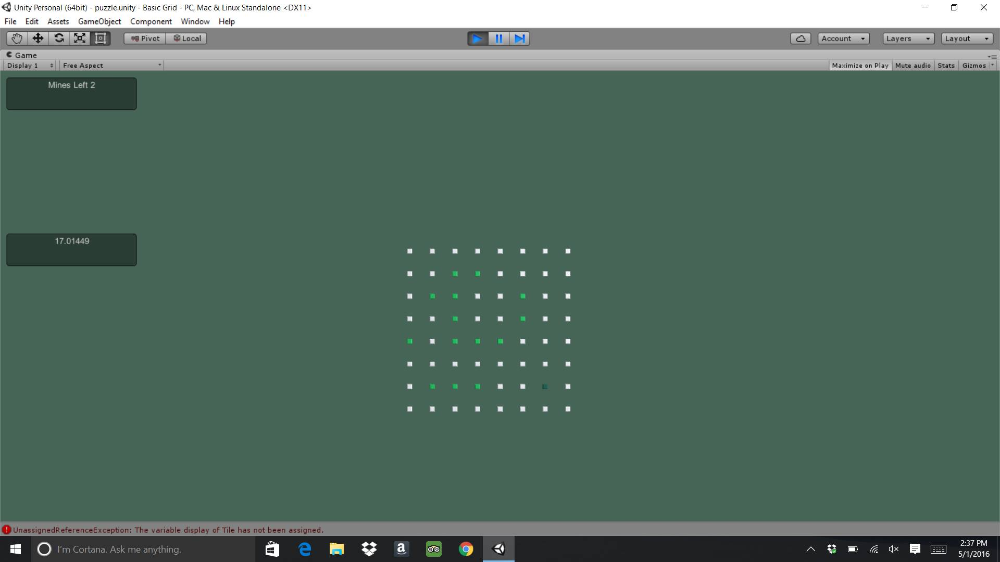

The tile was a 3D cube object which was also made into a prefab. All of the tiles in the grid are all the same size. Every time the game is played, random tiles get assigned mines. Not all tiles contain mines.
There are three different materials that are involved with all of the tiles. The first material is for lighting up the tile whenever the mouse is hovered over it. The first material is a lighter green color. The second material is for the vacant tile when the mouse stops hovering over it. The second material is a darker green color.

The third material was used to uncover the tiles once they were clicked on. If the tile that was clicked on and the tiles that were adjacent didn't contain mines, then they would turn to a pink color, while the rest of the tiles would stay the same. If the tile that was clicked on contained a mine, then that tile and the other tiles with mines would turn pink, revealing themselves.
The components that were used with the tile object were the Transform, the Box Collider, and the Mesh Renderer components, as well as the Tile script.
bool tileMined -> boolean variable to determine if a tile is mined or not
TextMesh display -> used to display number of nearby mines
Material tileVacant -> variable to represent the material of the tile when it is vacant
Material tileLightUp -> variable to represent the material of the tile when the mouse is hovered over it
Material uncoveredMaterial -> variable to represent the material of the tile when the tile has been clicked on
int tileID -> variable used to assign number ID's to each tile
int tilesRow -> number to represent number of tiles per row
Tile topTile -> variable used to represent the position of the top tile
Tile bottomTile -> variable used to represent the position of the bottom tile
Tile leftTile -> variable used to represent the position of the left tile
Tile rightTile -> variable used to represent the position of the right tile
Tile topLeftTile -> variable used to represent the position of the top left tile
Tile topRightTile -> variable used to represent the position of the top right tile
Tile bottomLeftTile -> variable used to represent the position of the bottom left tile
Tile bottomRightTile -> variable used to represent the position of the bottom right tile
int nearbyMines -> number of adjacent tiles with mines
List(Tile) nearbyTiles -> a list of type Tile that contains the adjacent tiles
string tileStatus -> string variable representing the state of the tile
private bool tileInGrid() -> This method checks to see if the tile is in the grid.
void numberOfMines() -> This method adds mines to an array list of nearby tiles. If a tile is mined, then the count of nearby mines is incremented.
void Start() -> The Start method creates the tiles that will be used in the grid. This method intializes each top, bottom, left, right, top left, top right, bottom left, and bottom right tile and makes sure that they are placed properly on the grid.
void tileUncover() -> This method uncovers tiles. If the tile is not mined, then the tile and the nearby tiles are uncovered. If the tile is mined then the tile is destroyed.
private void nearbyTilesUncover() -> This method uncovers the nearby tiles with no mines or nearby tiles with more than one adjacent mine, and in that case, it stops uncovering tiles.
void destroyTile() -> This method destroys the tiles with mines.
public void uncoverTilePause() -> This method uncovers nearby tiles with more than one adjacent mine, and it stops uncovering tiles.
void destroyAll() -> This method destroys all of the tiles.
void OnMouseOver() -> This method causes the tile to change to a lighter color when the mouse is hovered over it, indicating that the tile is uncovered.
void OnMouseExit() -> This method causes the tile to change to a darker color when the mouse has stopped hovering over it, indicating that the tile is vacant.